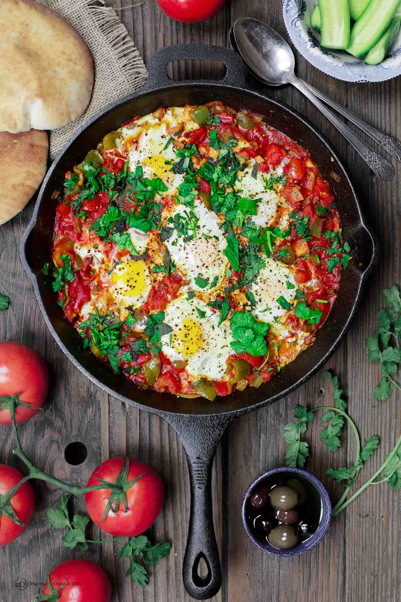

Chachouka

Ingredients
- Olive oil
- 1 Onion
- 1 Green bell pepper
- garlic
- Spices (coriander, cumin, paprika)
- 2 cans chopped tomatos
- 6 eggs
Steps
- Cook onions, bell peppers and garlic
- Add spices
- Add tomatoes
- Add eggs
- Cook until eggs are cookt
- Garnish and serve